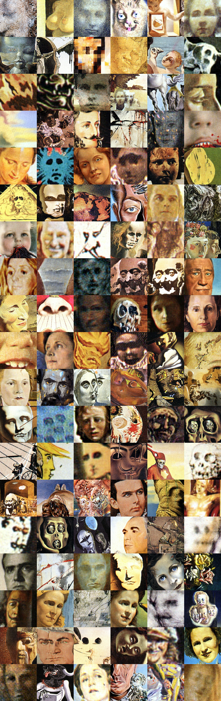

Finding Faces In Dali
by
@billautomata
Sourced from ~300 paintings by Salvadore Dali, the creative programming toolkit
openFrameworks
, and the computer vision library
OpenCV
, I performed an analysis of his work searching for faces. Below are the terrifying results.
